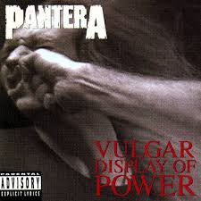

Vulgar Display of Power er sjötta stúdíóplata bandarísku þungarokkshljómsveitarinnar Pantera. Þetta kom út 25. febrúar 1992 í gegnum Atco Records og var annað samstarf sveitarinnar við framleiðandann Terry Date, eftir að hafa unnið með honum að tímamótaplötu þeirra Cowboys from Hell (1990).
Platan fékk góðar viðtökur bæði af gagnrýnendum og aðdáendum og er söluhæsta plata Pantera til þessa og myndi á endanum verða vottuð tvöföld platínu. Árið 2017 setti Rolling Stone Vulgar Display of Power í 10. sæti á lista þeirra yfir 'The 100 Greatest Metal Albums of All Time'.